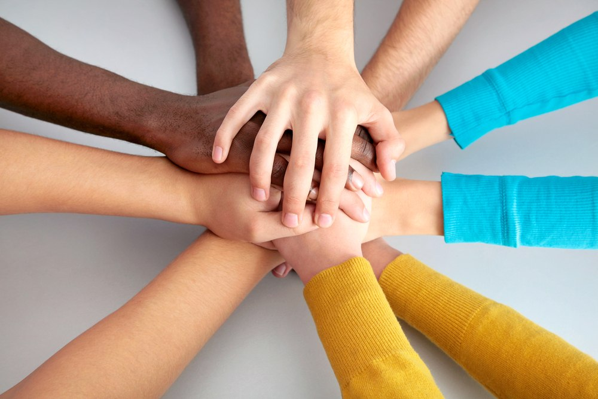

Grupos de Apoio
Os grupos de apoio são fundamentais para oferecer acolhimento, suporte emocional e troca de experiências entre pessoas que enfrentam o câncer. Eles ajudam a reduzir a sensação de isolamento, fortalecem a saúde mental e mostram que ninguém precisa passar por essa jornada sozinho.